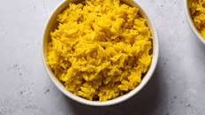

Saffron Rice

Description
Saffron rice, or yellow rice, is quick and easy to make in less than 30 minutes.
Ingredients:
Rice
Saffron
Step:
Rinse the rice
Add water to the rice
Grind the saffron and add it to the rice
Cook the rice for 30 mins